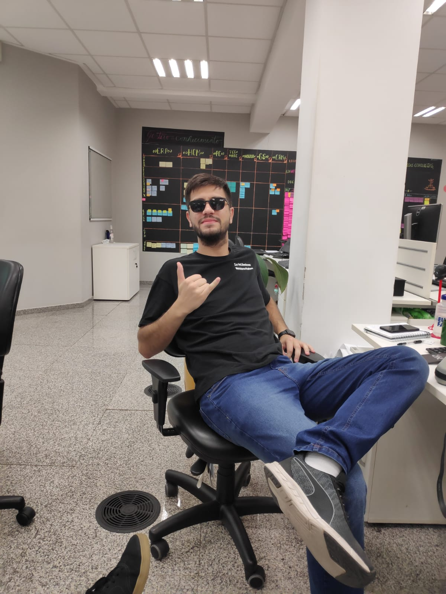

Sobre Mim
Dados Pessoais
- Naturalidade Estância Velha
- Telefone
- Data de nascimento
Habilidades
- PHP
- JAVA
- Metodologias Ágeis
- Análise de Sistemas
- Gestão de Equipes
Olá, eu sou Gabriel Avila, atualmente desenvolvedor 4 na Senior Sitemas.
Desde 2013 atuo na área de tecnologia, iniciada quando o Senai me propiciou a oportunidade de competir nas olimpíadas do conhecimento na área de TI (Solução de Software), e um estágio no polo, onde tive a oportunidade de estar próximo dos professores, e em alguns momentos assumir um dia de aula. Tempos depois, com a conclusão do curso técnico tive a oportunidade de iniciar carreira como programador então em 2015.
Atuando em empresas pequenas focadas na criação de softwares especialistas e customizados, em uma startup focada no agronegócio, até empresa de grande porte, com foco em atuação em grandes players do mercado e inovação acima de tudo.
Nesse período assumi atividades de desenvolvimento, nos mais diversos níveis e produtos, além da idealização, criação e conclusão de ferramentas. Quando na startup, gerenciei atividades não só minhas como de um colega. E, mais recentemente atuo com atividades análises de sistema, em forte parceria com o PO do produto, e também com organização de atividades, descrição de tarefas, análises e criações de tarefas de testes, e gestão da equipe, sprints e entregas.
Por último mudei novamente, em busca agora de retomar a parte técnica, dessa vez em Java, para que fosse possível completar meu objetivo de carreira, que é dar aulas de tecnologia. Atualmente, como desenvolvedor IV em Java, responsável por desenvolver features no sistema com alta qualidade e auxiliar a equipe no que for necessário.
Com as experiências profissionais até então adquiri bastante conhecimento, além de aprimorar características profissionais importantes que eram pontos a serem melhorados, logo, posso citar que tenho como pontos fortes facilidade de assimilar o conhecimento, facilidade em trabalhar em equipe e de relacionar com colegas de trabalho, responsabilidade, calma e auto-exigência..
Educação
| Instituição | Degree | Ano de Conclusão |
|---|---|---|
| UnoChapecó | Bacharelado em Sistemas de Informação | Incompleto 6/8 |
| Unicesumar | Tecnólogo Análise e Desenvolvimento de Sistemas | 2021 |
| Unicesumar | Pós Graduação Prática em Metologias Ágeis | Cursando |